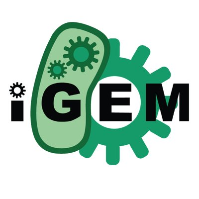
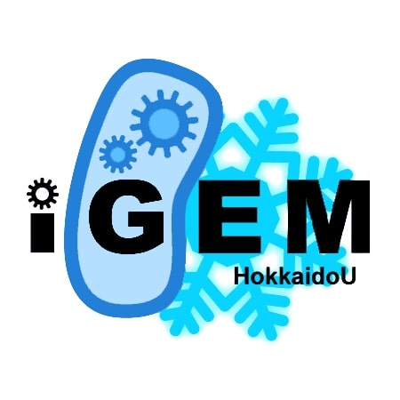

iGEM HokkaidoU 概要
iGEMとは

iGEMは11月にアメリカで開催される、世界の学生を対象とした合成生物学の大会です。
チームは主に大学学部生、大学院生で構成されます。
学生たちでその年に取り組むテーマを決定し、生物が用いる分子レベルの機構を利用してひとつのシステムを完成させます。
大会では制作したシステムがどのように働いて、学問や社会に恩恵をもたらすかをアピールします。
iGEMは、真新しい技術を学生が利用し競い合うという、これまでにない非常に有意義な活動の場を提供しています。
iGEMについてさらに詳しく知りたい方は公式ホームページもご覧ください。
iGEM HokkaidoU

iGEM HokkaidoUは、北海道大学の学生を中心とするiGEMチームです。
iGEM HokkaidoUは2010年から2017年まで活動していましたが、それ以降活動休止状態にありました。
そして2021年に再発足の動きが始まり、iGEM2022への参加を目標に活動を再開しました。
現在は来年のiGEM2022への参加へ向けて、活動に参加・協力していただける方を募集しています。
iGEM HokkaidoUに関わりたい方はCONTACTからご連絡ください。